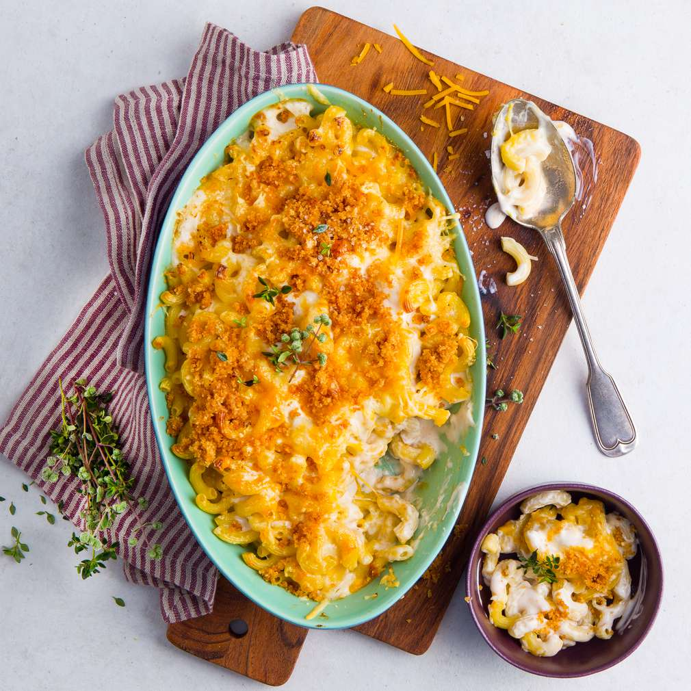

The classical All-American tasty side-dish.
Step:
Bring a large pot of lightly salted water to a boil. Cook elbow macaroni in the boiling water, stirring occasionally until cooked through firm but firm to the bite, 8 minutes. Drain.
Step:
Melt butter in a saucepan over medium heat; stir in flour, salt, and pepper until smooth, about 5 minutes. Slowly pour milk into butter-flour mixture while continously stirring until mixture is smooth and bubbling, about 5 minutes. Add Cheddar cheese to milk mixture and stir until cheese is melted 2 to 4 minutes.
Step:
Fold macaroni into cheese sauce until coated.